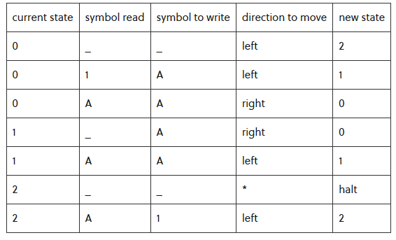
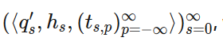

Jauh sebelum lahirnya program komputer, Alan Turing pada tahun 1936 telah mengeluarkan gagasannya berupa model mesin abstrak sebagai alat mekanik untuk mengerjakan prosedur yang efektif. Model ini disebut Mesin Turing. Mesin turing dapat diadaptasi
untuk mensimulasi logika dari setiap algoritma oleh karena itu cara kerja mesin turing adalah ekivalen dengan cara kerja komputer sekarang ini dan mesin turing juga ekivalen dengan problema komputasi matematika. Mesin turing tidak ditujukan
sebagai teknologi komputasi praktis tetapi lebih sebagai eksperimen pemikiran yang mewakili sebuah mesin komputasi. Mesin turing membantu para ilmuan komputer memahami batas-batas komputasi mekanis.Sebagai input dari mesin turing adalah kata
atau untai atas suatu alfabet T. Mesin turing berhenti dengan keadaan menerima atau menolak untai. Kadang-kadang terjadi pula perulangan atau looping tak terhingga.

Mesin Turing terdiri dari tape tak terbatas (sebagai memori), tape head (penunjuk ke sel memori yang sedang diperiksa), dan sebuah state transition tabel (untuk mengatur perilaku mesin). Setiap sel pita dapat memiliki salah satu dari kumpulan simbol terbatas yang telah ditentukan sebelumnya, salah satunya adalah simbol kosong.
Mesin Turing adalah model komputasi abstrak yang melakukan komputasi dengan membaca dan menulis ke pita tak terbatas. Mesin Turing menyediakan model komputasi yang kuat untuk memecahkan masalah dalam ilmu komputer dan menguji batas komputasi. Mesin Turing mirip dengan mesin automata tetapi memiliki keunggulan memori tak terbatas. Mereka mampu mensimulasikan komputer umum, masalah yang dapat diselesaikan oleh komputer biasa (dengan memori yang cukup) juga akan dapat diselesaikan dengan menggunakan mesin Turing, dan sebaliknya.
Berikut adalah mesin Turing yang memeriksa apakah string masukan adalah palindrome.
 Kepala pita bergerak di sepanjang pita membaca dan menulis simbol seperti yang diarahkan oleh pemrograman mesin Turing
Kepala pita bergerak di sepanjang pita membaca dan menulis simbol seperti yang diarahkan oleh pemrograman mesin Turing
Seperti yang ditunjukkan pada animasi di atas, mesin Turing terdiri dari tape yang diinisialisasi dengan serangkaian simbol. Mesin memiliki head yang membaca dan menulis simbol saat bergerak di sepanjang pita. Ketika pita itu membaca simbol tertentu, ia memutuskan apa yang harus dilakukan (apa yang akan ditulis ke tape pada titik itu dan kemudian ke arah mana untuk bergerak selanjutnya) tergantung pada set fungsi transisi yang terkait dengan mesin. Fungsi transisi pada dasarnya adalah baris instruksi khusus dalam program mesin Turing. Anda dapat menganggap himpunan fungsi transisi sebagai program lengkap yang menentukan apa yang harus dilakukan mesin Turing pada input valid yang diterimanya. Dalam praktiknya, fungsi transisi mengambil bentuk berikut (lihat di bawah untuk definisi formal).
Mesin Turing, seperti algoritme, dijalankan pada string masukan bit. Pada awalnya, string input ditulis pada tape, kepala tape menunjuk ke sel pertama dari string, dan semua sel lain kosong.
Selama pengoperasian, tape head berada dalam kondisi tertentu. Setiap langkah, ia berkonsultasi dengan tabel (himpunan fungsi transisi), berdasarkan hanya keadaannya dan simbol di bawah kepala, untuk mendapatkan pilihan berikutnya: berhenti (mengakhiri operasi), atau melanjutkan dengan menulis simbol ke sel saat ini, mengubah statusnya, dan berpindah ke kiri atau kanan. Dengan cara ini, mesin Turing dapat mensimulasikan fakta bahwa sebuah program dibuat dari banyak baris dan oleh karena itu bergantung pada baris mana yang dijalankan program, dan juga dapat mensimulasikan fakta bahwa program dapat bereaksi secara berbeda dengan data yang berbeda dalam memori.
Dengan demikian, mesin Turing dapat berhenti di beberapa titik atau berjalan selamanya. Jika berhenti, konten rekaman itu adalah outputnya.
Fungsi transisi sering direpresentasikan dalam bentuk tabel. Tabel di bawah ini menjelaskan mesin Turing sederhana yang mengambil string 111 sebagai masukan dan menggandakannya. Jadi "11" menjadi "1111" dan seterusnya. Dalam spesifikasi di bawah ini, ada tiga status: status 0,1, dan 2. penghentian adalah status khusus yang dapat Anda gunakan untuk menunjukkan bahwa program Anda telah selesai. Terdapat 2 simbol: 1 dan A. Terdapat tiga pilihan arah pergerakan: kiri, kanan, dan tetap (ditandai dengan *).

Di sini, simbol "A" digunakan untuk menunjukkan "1" yang telah kita lihat, dan ketika kita membaca "1" kita menulis "A". Ini agar kami tidak menghitung dua kali simbol. Setelah kami mengubah semua 1 menjadi A, semua simbol pada rekaman akan menjadi A. Kemudian, ubah semua A menjadi 1 dan string asli menjadi dua kali lipat.
Mari kita melalui mesin Turing penggandaan string ini (dijelaskan oleh tabel di atas) selangkah demi selangkah pada input "111" (meskipun mesin ini akan menggandakan string 1).
 Kode di bawah pita menunjukkan fungsi transisi. Langkah selanjutnya yang akan diambil disorot dengan warna biru, dan langkah sebelumnya disorot
dengan warna oranye. (Catatan dalam simulasi di atas, kiri dilambangkan dengan huruf kecil L, dan kanan dilambangkan dengan huruf kecil R.)
Kode di bawah pita menunjukkan fungsi transisi. Langkah selanjutnya yang akan diambil disorot dengan warna biru, dan langkah sebelumnya disorot
dengan warna oranye. (Catatan dalam simulasi di atas, kiri dilambangkan dengan huruf kecil L, dan kanan dilambangkan dengan huruf kecil R.)
Mesin Turing didefinisikan sebagai 7 tuple (Q, T, B, ∑, δ, q0, F)
- Q adalah himpunan state terbatas
- T adalah alfabet pita (simbol yang dapat ditulis di Tape)
- B adalah simbol kosong (setiap sel diisi dengan B kecuali alfabet masukan pada awalnya)
- ∑ adalah alfabet masukan (simbol yang merupakan bagian dari alfabet masukan)
- δ adalah fungsi transisi yang memetakan Q × T → Q × T × {L, R}. Bergantung pada status saat ini dan alfabet pita saat ini (ditunjukkan oleh penunjuk kepala), ia akan berpindah ke status baru, mengubah simbol pita (mungkin atau mungkin tidak) dan memindahkan penunjuk kepala ke kiri atau kanan.
- q0 adalah state awal
- F adalah himpunan keadaan akhir. Jika ada status F tercapai, string input diterima.
pengoperasian mesin turing secara berurutan sebagai berikut
 dimana:
- qs adalah state dari tape head pada langkah s-th
- hs adalah posisi dari tape head pada step s-th dan posisi p-th
- ts,padalah content dari tape pada langkah s-th dan posisi p-th
Properti
Mesin Turing dapat mengenali dan memutuskan berbagai jenis masalah dan bahasa. Bahasa menggambarkan masalah. Misalnya, ada bahasa semua string yang seluruhnya terdiri dari 1 - beberapa anggota bahasa ini adalah "1", "111111", "111111111", dll. Seseorang dapat membuat mesin Turing untuk menghitung string ini. Misalnya, tulis program yang membuat mesin Turing menulis angka 1 setiap kali bergerak ke kanan dan membuatnya selalu bergerak ke kanan.
Dapat Dikenali
Dapat dikenali Sebuah bahasa dapat dikenali jika mesin Turing menerima ketika string input ada dalam bahasa tersebut, dan menolak atau mengulang selamanya ketika string input tidak ada dalam bahasa tersebut. Dengan kata lain, jika suatu bahasa dapat dikenali, ada string yang tidak ada dalam bahasa yang tidak dapat dihentikan oleh mesin Turing.
Decidability
Sebuah bahasa dapat ditentukan jika mesin Turing menerima string yang ada dalam bahasa tersebut dan menolak string yang tidak ada dalam bahasa tersebut. Dengan kata lain, mesin Turing akan berhenti pada semua input. Semua bahasa decidable dapat dikenali, tetapi tidak semua bahasa decidable dapat decidable. Masalah terputus-putus adalah contoh penting dari masalah yang dapat dikenali yang tidak dapat diputuskan.
Tesis Church-Turing mengklaim bahwa masalah komputasi apa pun dapat dihitung oleh mesin Turing. Ini berarti bahwa komputer yang lebih kuat daripada mesin Turing tidak diperlukan untuk memecahkan masalah yang dapat dihitung. Gagasan tentang kelengkapan
Turing terkait erat dengan ini. Suatu sistem Turing lengkap jika dapat menghitung setiap fungsi komputasi Turing. Bahasa pemrograman yang Turing lengkap secara teoritis mampu mengungkapkan semua tugas yang dapat diselesaikan oleh komputer;
hampir semua bahasa pemrograman Turing lengkap.
Untuk membuktikan bahwa sesuatu adalah Turing lengkap, cukup dengan menunjukkan bahwa ia dapat mensimulasikan beberapa sistem Turing lengkap lainnya. Biasanya, paling
mudah untuk menunjukkan bahwa sistem dapat mensimulasikan mesin Turing universal. Mesin Turing universal adalah mesin Turing yang dapat mensimulasikan mesin Turing lainnya. Lihat juga
Referensi:
Wikipediageeksforgeeks
Turing Machines